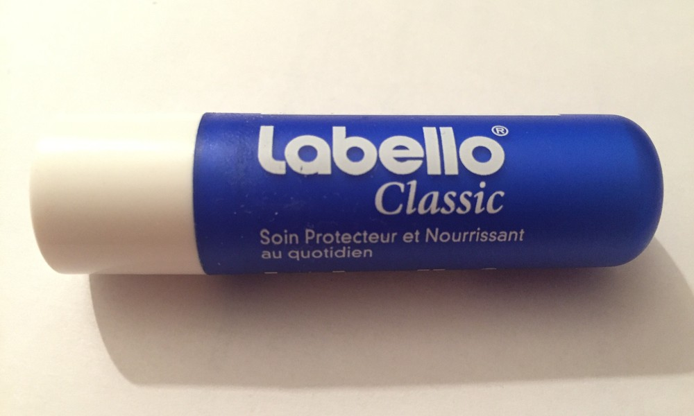
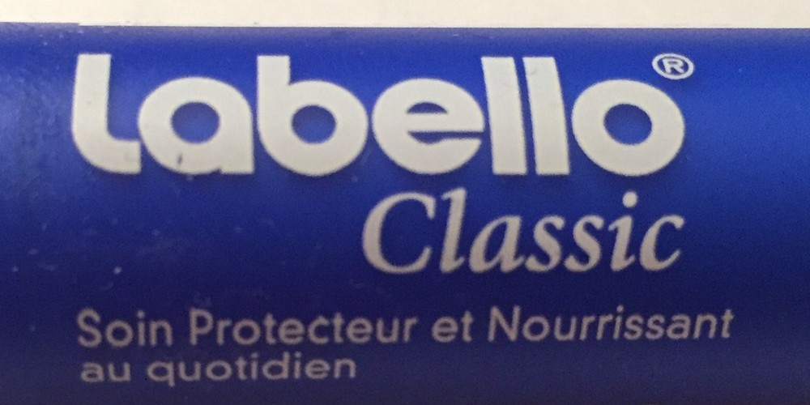
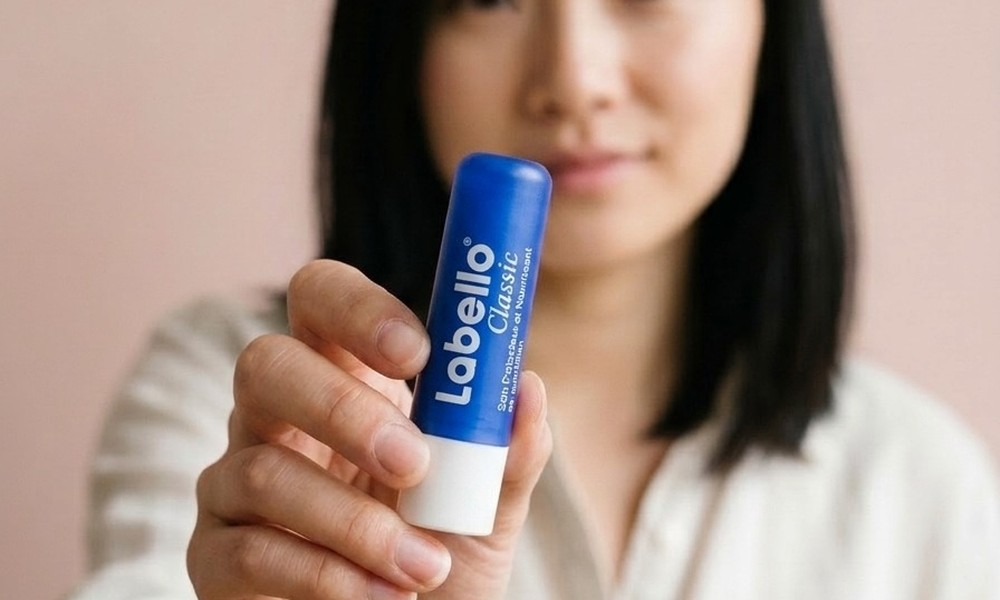
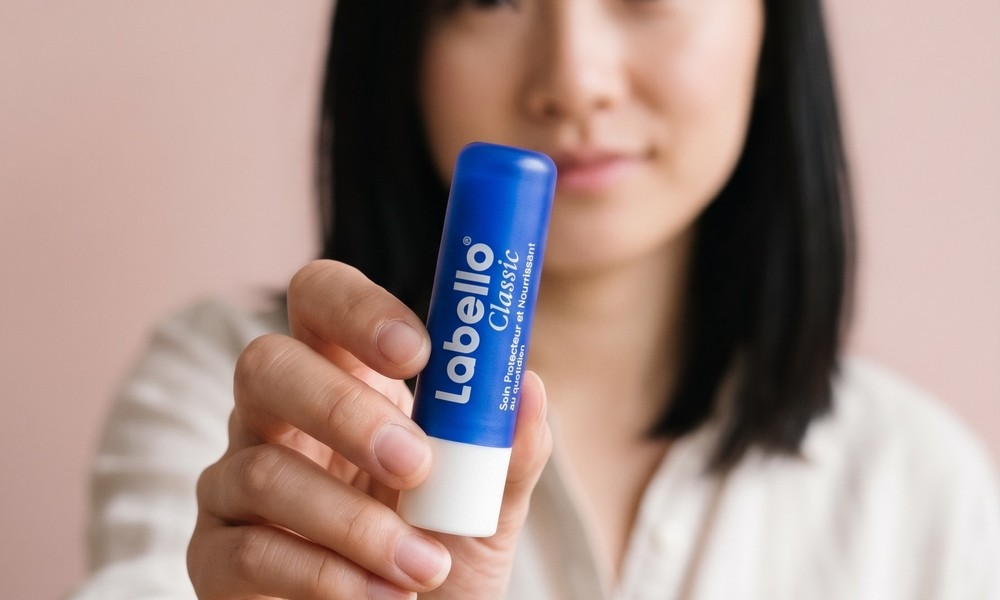

Real product photo


Small print: Soin Protecteur et Nourrissant au quotidien
Ground truthThe photo every result is checked against
Generated at 1K 896 × 1200


Logo right. Small print is gibberish.
Verified: noFidelity 0 / 2 · Total 8 / 10text: different (TEXT_GARBLE)
Generated at 2K 1792 × 2400


Logo right. Small print reads correctly.
Verified: yesFidelity 2 / 2 · Total 10 / 10nine of nine checks: same